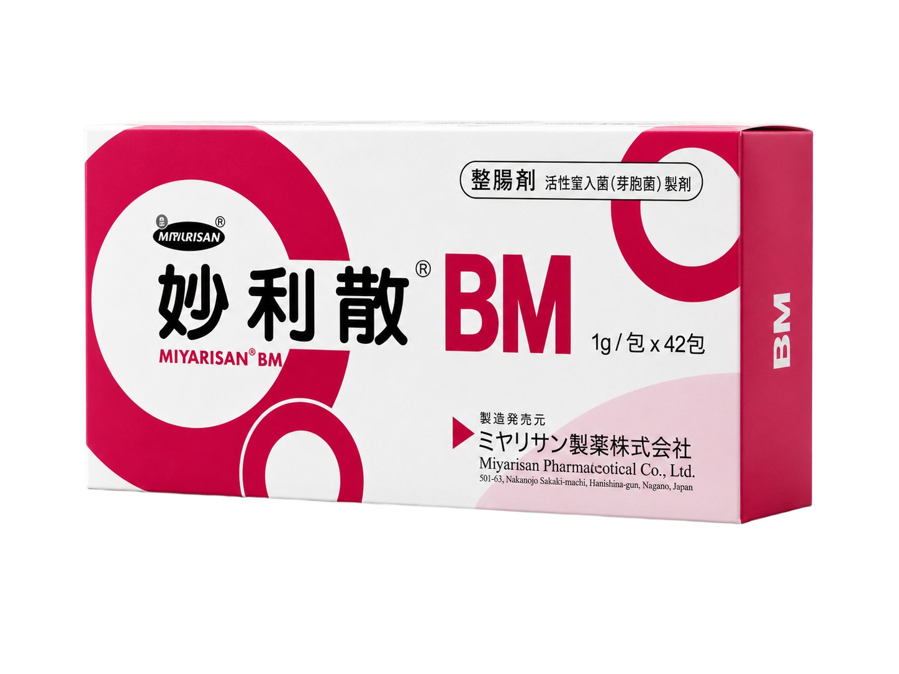

日本原廠「妙利散製藥株式會社」原裝進口。
含 NGP Clostridium Butyricum Miyairi 588 株酪酸菌，
緩解腹瀉、腹痛及便祕，調整腸道。

ミヤリサン製薬株式会社 · 台灣總代理：裕心企業有限公司
好菌、壞菌不平衡，腸道不適找上門。
好的益生菌，關鍵在菌株。每個人需求不同，選對菌株才會有效。妙利散採用日本獨家 CBM588 宮入菌株，70 年以上臨床驗證，有效調整腸道環境。

日本ミヤリサン製藥（Miyarisan）自 1955 年起深耕腸道菌研究，成功開發具嚴謹機制驗證與紮實實證的「宮入菌 CBM588®」。其不同於傳統益生菌，具備次世代益生菌（NGP）特質，並遵循活性生物製劑（LBP）之嚴格標準進行菌株篩選與製劑設計，確保每一批產品皆達到臨床驗證的品質基準。
從菌株到 LBP 製劑，決定益生菌定位
符合台灣 OTC 醫療級相關規範，依規定進行登錄與管理，外包裝標示清楚、批號可追，並接受主管機關監督，作為藥品專業度與安全性的基本條件。
OTC 藥品規範僅於正規醫療通路（醫院、藥局）流通，是判斷益生菌專業度的重要基礎。符合藥事管理相關規範，並接受完整的來源與流向管理。
醫療通路規範基於菌株特性與製劑設計，具耐酸與耐熱特性，具備因應環境變化確保活菌的穩定性，並有可重複驗證的人體 RCT 臨床研究支持。
臨床實證要求選益生菌關鍵在菌株。CBM588 宮入菌具備獨特的生物特性，能 100% 順利抵達腸道，有效幫助維持消化道機能。
堅持日本原裝進口，符合藥廠級 PIC/S GMP 規格生產。CBM588 具備天然「芽孢」外殼，搭配最高標準的藥品級製程，確保產品的穩定性與高品質。
CBM588 宮入菌株榮獲日本雙專利認證與多國官方肯定；憑藉豐富的臨床數據與實證醫學支持，深得醫界核心信賴。
每一步都建立在可重複驗證的科學基礎上